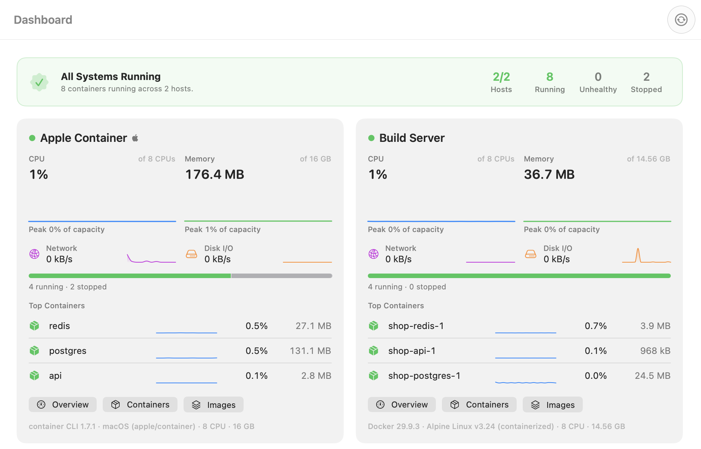

Aplikácia pre Mac pre Apple container a Docker
Gantry je bezplatná open-source aplikácia pre Mac pre nástroj container od Apple aj pre Docker, lokálne aj cez SSH. Spúšťajte kontajnery, klastre Kubernetes, stroje a projekty Compose na apple/container z jedného okna, hneď vedľa hostiteľov Docker. Bezplatná alternatíva k Docker Desktop a OrbStack pre Mac.
Gantry 0.29.0 · macOS 26+ · Apple silicon a Intel · licencia MIT · 28 jazykov · vrátane servera MCP

Od príkazu k ovládaciemu prvku
Nástroj container od Apple a Docker sú nástroje príkazového riadka. Každý príkaz v tejto tabuľke má v Gantry ovládací prvok.
- container
- docker
- docker compose
- kubectl
| Príkaz | V Gantry |
|---|---|
container run, container create | Hárok Nový kontajner a Rýchle spustenie: obraz, názov, príkaz, porty, prostredie, zväzky, doména DNS, vlastné jadro a spúšťacie argumenty; Vložiť príkaz… prečíta riadok docker run alebo container run |
container start, stop, kill, delete, prune | Panel s nástrojmi, kontextové menu a panel na lište menu |
container logs | Karta Logy: živé sledovanie, vyhľadávanie cez regex, filter úrovní, farby ANSI; Exportovať logy… uloží viditeľné riadky |
container stats | Karta Štatistiky, grafy v prehľade flotily a tabuľka Využitie prostriedkov |
container exec | Karta Terminál (interaktívny shell) a karta Procesy |
container inspect | Karty Prehľad a Preskúmať; Exportovať ako Compose… prevedie konfiguráciu na súbor Compose |
container copy | Karta Súbory: uloženie do Macu a vytiahnutie do Findera (kontajner musí byť spustený) |
container image pull, tag, delete, prune, inspect | Obrazy: sťahovanie s priebehom, označenie tagom, odstránenie, čistenie, preskúmanie; Skontrolovať zraniteľnosti… pomocou Trivy alebo Grype |
container build | Zostaví služby build: zo súboru Compose; sekcia Zostavenia uvádza zostavenia, ktoré spustila Gantry |
container machine create, run, stop, delete, set-default, set, inspect | Stroje: vytvorenie, spustenie, zastavenie, vymazanie, predvolený stroj, CPU a pamäť, shell, preskúmanie, Otvoriť vo VS Code |
container cluster create, list, delete, write-config, load-image | Klastre: klastre Kubernetes, veľkosti pracovných uzlov a zdieľané úložisko obrazov (1.7), uzly, kubeconfig, Prehliadať zdroje, Načítať do klastra (1.5 a 1.6) |
Žiadny príkaz compose | Spúšťanie Compose: spustí docker-compose.yml z Findera, z menu Súbor alebo pretiahnutím |
Kontajnery
Vytvárajte, spúšťajte, otvárajte a meňte kontajnery na každom hostiteľovi.
- container run
- docker exec -it
- docker cp
- docker port
- Vložte
docker run - Vložte príkaz
docker run,podman runalebocontainer runa Gantry vyplní formulár Nový kontajner a vypíše príznaky, ktoré nemôže použiť. Ľubovoľný kontajner môžete skopírovať späť ako príkaz alebo ho uložiť ako recept. Ako to funguje - Vstavaný terminál exec
- Plnohodnotná emulácia terminálu v akomkoľvek spustenom kontajneri, lokálnom aj vzdialenom – s farebnými motívmi (System, Solarized, Dracula, Nord).
- Prehliadač súborov s presúvaním myšou
- Prechádzajte súborový systém kontajnera, presúvajte súbory dnu aj von a vkladajte celé priečinky priamo z Findera – na hostiteľoch Docker aj apple/container.
- Otvorenie v prehliadači a presmerovanie
- Jedno kliknutie otvorí publikovaný port. Porty cez SSH sa automaticky tunelujú na
localhost– a ak je port obsadený, Gantry vyberie voľný, ktorý môžete zmeniť. - Zdieľanie na internet
- Jedno kliknutie sprístupní publikovaný port cez Cloudflare Tunnel. Gantry za vás nainštaluje
cloudflareda potom ponúkne rýchly tunel (bez účtu, URL*.trycloudflare.com) alebo pomenovaný tunel na vašej vlastnej doméne – ideálne na náhľad vývojovej verzie, webhook alebo prístup AI agenta ku kontajneru na vašom Macu. - Tajné údaje z Kľúčenky v prostredí
- Heslá a tokeny uložte do Kľúčenky macOS (Nastavenia → Tajné údaje) a používajte ich ako premenné prostredia v hárkoch Nový kontajner a Rýchle spustenie. Formulár zobrazuje
keychain:NAME, nikdy hodnotu, a Gantry hodnotu načíta až pri vytváraní kontajnera. Export Compose, recepty a Kopírovať ako príkaz zapisujú názov, nie hodnotu. - Viac naraz
- Vyberte niekoľko kontajnerov, obrazov, zväzkov alebo sietí a spustite, zastavte, reštartujte alebo odstráňte ich jedným krokom, s priebehom a výsledkom pri každej položke.
- Štatistiky v reálnom čase
- CPU, pamäť, sieť a diskové I/O v živých grafoch so vzorkovaním každú sekundu.
- Kontajnery na externom disku
- Presuňte všetky dáta apple/container na externý disk, majte zväzky na disku podľa vlastného výberu, a keď tento disk nie je pripojený, dostanete jasné upozornenie. Prečítajte si návod

Obrazy a zostavenia
Sťahujte, zostavujte, kontrolujte a odstraňujte obrazy.
- docker build
- docker pull
- trivy image
- docker system prune
- Zostavenie a sťahovanie obrazov
- Pretiahnite Dockerfile do okna a zostavte obraz so živým logom, alebo stiahnite obraz podľa referencie s priebehom pre každú vrstvu. Označujte tagmi, čistite a čítajte históriu vrstiev. Štítok označí obrazy zostavené pre inú architektúru CPU, než má hostiteľ.
- História zostavení
- Každý hostiteľ má sekciu Zostavenia: zostavenia s ich krokmi, zásahmi vyrovnávacej pamäte a logom. Gantry uchováva zostavenia, ktoré sama spúšťa, s názvami argumentov zostavenia, ale bez ich hodnôt. Na hostiteľoch Docker číta aj
docker buildx history(buildx 0.23.0 alebo novší). apple/container históriu zostavení neuchováva, takže tam vidíte zostavenia, ktoré spustila Gantry. - Kontrola obrazov pomocou Trivy alebo Grype
- Pri obraze zvoľte Skontrolovať zraniteľnosti…. Gantry spustí Trivy (0.50.0 alebo novší) alebo Grype (0.74.0 alebo novší), ktorý ste nainštalovali, napríklad cez Homebrew, a zoskupí nálezy od kritických po neznáme. Exportovať SBOM zapíše CycloneDX, alebo s Trivy SPDX. Funguje na apple/container, lokálnom Dockeri aj Dockeri cez SSH, kde Gantry kontroluje kópiu otagovaného obrazu v registri.
- Súkromné registre
- Sťahovanie využíva
docker login, ktorý ste už spustili – Gantry načíta prihlasovacie údaje z~/.docker/config.json, credential helperov a Kľúčenky, pri vytváraní kontajnera, v Rýchlom spustení aj v Compose. - Uvoľnite miesto
- Jeden panel ukáže, čo zaberá miesto – neoznačené obrazy, zastavené kontajnery, nepoužívané zväzky, vyrovnávaciu pamäť zostavení – aj s veľkosťami, a vyčistí každú položku zvlášť alebo všetko naraz. Na apple/container spustí aj TRIM disku.
Compose
Spustite docker-compose.yml v Dockeri alebo na apple/container a vytvorte ho zo spustených kontajnerov.
- docker compose up -d
- docker compose down
- docker compose logs -f
- Compose na každom hostiteľovi
- Kontajnery sa zoskupujú podľa projektu Compose. Spustite súbor Compose na ľubovoľnom hostiteľovi – lokálnom Dockeri, SSH alebo apple/container – so vstavaným editorom YAML; spúšťanie sa prispôsobí danému enginu.
- Export ako Compose
- Pri jednom alebo viacerých kontajneroch zvoľte Exportovať ako Compose… a získate
docker-compose.ymls portami, pripojeniami, sieťami, politikou reštartu, kontrolou stavu, limitmi a ďalším. Hodnoty, ktoré vyzerajú ako tajné údaje, sa zmenia na${NAME}, ak ich nezahrniete. Na hostiteľoch apple/container Gantry upozorní na príznaky, ktoré Compose nedokáže vyjadriť. Ako to funguje
Kubernetes
Prechádzajte každý kontext kubeconfig alebo vytvorte klaster s apple/container.
- kubectl get pods -A
- kubectl logs -f
- kubectl port-forward
- container cluster
- Prehliadač Kubernetes
- Prehliadajte pody, deploymenty, StatefulSety, DaemonSety, služby, ingressy, ConfigMapy, secrety, uzly a udalosti ľubovoľného kontextu kubeconfig. Sledujte logy podov, otvorte shell, presmerujte port, škálujte, reštartujte nasadenie a použite YAML. Gantry komunikuje s Kubernetes API sama, takže klaster vytvorený príkazom
container cluster createmôžete prehliadať hneď, bez inštalácie čohokoľvek ďalšieho: bezkubectl. - Klastre Kubernetes
- Vytvorte klaster Kubernetes pomocou
container cluster: nastavte veľkosť riadiacej roviny a pracovných uzlov zvlášť, zvoľte CNI a sledujte uzly, verziu Kubernetes a kontext kubeconfig. Uzly klastra sú chránené pred nechceným zastavením a vymazaním. Viac

Hostitelia a flotila
Tento Mac, hostitelia Docker cez SSH a apple/container na jednom prehľade.
- docker -H ssh://user@host
- docker context use
- docker stats
- Jeden prehľad pre všetkých hostiteľov
- Lokálny démon, flotila SSH a apple/container na jednej obrazovke – živé grafy CPU a pamäte, rozdelenie kontajnerov podľa stavu a problémy so zdravím, ktoré vás dovedú rovno k vinníkovi.
- Vzdialení hostitelia cez SSH
- Tunelovanie presne ako
docker -H ssh://cezdial-stdio– bastióny ProxyJump, overovanie viacerými kľúčmi, automatické opätovné pripojenie. Na serveri nič neinštalujete, tajné údaje sú v Kľúčenke. Import jedným kliknutím z~/.ssh/configadocker context ls. - Využitie prostriedkov pre všetkých hostiteľov
- Jedna zoraditeľná tabuľka spustených kontajnerov na každom pripojenom hostiteľovi: hostiteľ, názov, obraz, CPU, pamäť, sieťové I/O, diskové I/O a doba behu. Filtrujte podľa názvu, obrazu alebo hostiteľa, alebo zobrazte len jedného hostiteľa. Dvojitým kliknutím na riadok otvoríte kontajner. Tabuľka používa vzorky, ktoré Gantry už odoberá každých 5 sekúnd, takže neotvára žiadne nové prúdy štatistík. Otvorte ju z bočného panela, pomocou ⌘K alebo cez
gantry://open/usage.



Logy a zlyhania
Čítajte, prehľadávajte a exportujte logy. Zistite príčinu, keď kontajner zlyhá.
- docker logs -f
- container logs
- docker events
- Živé logy
- Sledovanie v reálnom čase, vyhľadávanie ⌘F cez regex alebo doslovne, filter úrovní (Error→Trace), farby ANSI, buffer na 50 000 riadkov – a zlúčené logy stacku pre celý projekt Compose.
- Export logov
- Exportovať logy… (⇧⌘E) uloží riadky, ktoré vidíte, s filtrom úrovní, vyhľadávaním a časovým obdobím, ako súbor
.logalebo.txt. Kopírovať viditeľné riadky ich skopíruje. Na hostiteľoch Docker môžete pridať časové pečiatky a zobraziť len posledné obdobie, od 5 minút do jedného dňa. - Hlásenia o zlyhaní
- Natívne hlásenie, keď kontajner na ktoromkoľvek hostiteľovi spadne, minie pamäť alebo sa stane nezdravým. Kliknutím prejdete rovno na kontajner – zastavenia, ktoré spustíte sami, sa nehlásia.
- Vysvetliť zlyhanie s Apple Intelligence
- Pri spadnutom kontajneri alebo neúspešnej operácii zvoľte Vysvetliť zlyhanie…. Gantry pošle nedávne logy a podrobnosti, bez hodnôt premenných prostredia a textu, ktorý vyzerá ako tajný údaj, modelu v zariadení a zobrazí pravdepodobnú príčinu, dôkazy a ďalšie kroky. Dlhé logy môžu ísť do Private Cloud Compute (macOS 27). Panel ukazuje presne, čo sa odoslalo.
- Snímky obrazovky vo Vysvetliť zlyhanie
- Do Vysvetliť zlyhanie presuňte, vložte alebo pridajte až 3 obrázky, napríklad snímku obrazovky chybovej stránky. Obrázky zostanú v tomto Macu: číta ich len model v zariadení (macOS 27), nikdy Private Cloud Compute.

macOS
Lišta menu, hlásenia, Spotlight, Skratky a klávesnica.
- ⌘K
- ⌥⌘P
- ⇧⌘E
- Súčasť macOS
- Hlásenia s akciami Reštartovať, Zobraziť logy a Kopírovať ako prompt. Spotlight nájde kontajnery, projekty Compose a hostiteľov. Akcie pre Siri a Skratky, widget so stavom flotily, ovládacie prvky v Ovládacom centre pre služby apple/container alebo obľúbený kontajner a odkazy
gantry://pre skripty. - Priebeh na lište menu
- Panel na lište menu ukazuje každé prebiehajúce sťahovanie, zostavenie a operáciu Compose s indikátorom priebehu, hotovými vrstvami alebo službami, bajtmi, časom a tlačidlom Zrušiť. Ikona na lište menu ukazuje, koľko operácií beží. Každý projekt Compose má Stiahnuť obrazy a Compose down; Compose down ponechá zväzky a obrazy.
- Paleta príkazov
- Stlačte ⌘K a píšte. Jedno vyhľadávanie pokrýva kontajnery, projekty Compose, obrazy, zväzky, siete, stroje, klastre a hostiteľov, s akciami ako Spustiť, Zobraziť logy a Otvoriť shell.
- Touch ID pri deštruktívnych akciách
- Zapnite si to a Gantry si pred odstránením kontajnera alebo vymazaním hostiteľa vyžiada Touch ID – alebo prihlasovacie heslo. Tajné údaje sú už aj tak v Kľúčenke.
- Motívy terminálu
- Oblečte vstavaný shell do motívu System, Solarized Dark, Dracula alebo Nord – kompletná paleta popredia, pozadia a 16 farieb ANSI, použitá okamžite.

Natívne GUI pre Apple container v macOS
Nástroj container od Apple spúšťa linuxové kontajnery ako odľahčené virtuálne stroje na Apple silicon, ale dodáva sa len ako nástroj príkazového riadka. Gantry je preň desktopová aplikácia: čím je Docker Desktop pre Docker, tým je Gantry pre container. Podporuje každé CLI container od 1.0 po odporúčanú 1.7.1 a každú funkciu zapne, až keď ju nainštalované CLI podporuje.
- container system start
- container machine
- container builder start
- container registry login
- Kontajnery, logy, štatistiky a exec
- Vytváranie, spúšťanie, zastavovanie, vynútené ukončenie a čistenie; živé logy, štatistiky, terminál exec,
topa export do taru – v rovnakom rozhraní ako vaši hostitelia Docker. - Klastre Kubernetes
- Vytvorte klaster Kubernetes pomocou
container cluster: nastavte veľkosť riadiacej roviny a pracovných uzlov zvlášť, zvoľte CNI a sledujte uzly, verziu Kubernetes a kontext kubeconfig. Uzly klastra sú chránené pred nechceným zastavením a vymazaním. Viac - Lokálne obrazy v klastri
- V CLI 1.7 zapnite Používať lokálne obrazy (
--shared-image-store) a pody spustia obrazy, ktoré zostavíte alebo stiahnete, bez registra. V CLI 1.5 a 1.6 kliknite na obraz pravým tlačidlom a zvoľte Načítať do klastra. - Jasné rady, keď je inštalácia poškodená
- Ak služby klastra neodpovedajú, Gantry povie prečo. Build z Homebrew bez služieb klastra dostane odkaz na podpísaný inštalátor, vo všetkých ostatných prípadoch sa zobrazí tlačidlo Reštartovať služby.
- Stroje container vo VS Code
- Vytvárajte, spúšťajte a zastavujte linuxové prostredia
container machine, nastavte CPU a pamäť, otvorte shell alebo otvorte stroj vo VS Code cez Remote-SSH. - Vnorená virtualizácia a vlastné jadrá
- Spustite stroj s vnorenou virtualizáciou (M3 alebo novší) alebo s vlastným jadrom. Spúšťajte kontajnery z vlastného jadra s ďalšími spúšťacími argumentmi.
- Compose pre Apple container
- apple/container nemá
compose. Gantry spustí vášdocker-compose.yml: zostaví, vytvorí sieť a zväzky a spustí služby v poradí podľadepends_on. Názvy služieb sa prekladajú cez aliasy DNS v sieti. - Aliasy DNS v sieti
- Aliasy kontajnerov, aliasy podstromu ako
.gatewaya krátke názvy, keď je nastavená predvolená doména DNS. Každý kontajner dostane smerovateľnú IP adresu a názov hostiteľaname.domain. - Správa buildera obrazov
- Zobrazte stav buildera, obraz, CPU, pamäť a IP. Spustite ho s možnosťami CPU, pamäte a DNS, zastavte ho alebo vymažte. Keď je obraz buildera zastaraný, Gantry ponúkne jeho opätovné vytvorenie.
- Prihlásenia do registrov
- Vypisujte, pridávajte a odstraňujte prihlásenia
container registry. Heslo ide do CLI výhradne cez stdin a Gantry si neuchováva žiadnu kópiu. - Inštalácia jadra
- Nainštalujte odporúčané jadro, súbor jadra alebo archív tar s priebehom v reálnom čase. Gantry upozorní, keď nie je nainštalované žiadne predvolené jadro.
- Služby a logy služieb
- Spúšťajte, zastavujte a reštartujte služby
container, porovnávajte verzie klienta a servera a streamujte logy služieb filtrované podľa úrovne, služby a textu. - Editor systémových vlastností
- Upravujte systémové vlastnosti
containervconfig.toml. Gantry označí zmeny, ktoré vyžadujú reštart, a služby reštartuje za vás. V CLI 1.7 upravuje aj predvolené hodnoty[container.dns]: menné servery, vyhľadávacie domény a možnosti. - Uloženie ako obraz a TRIM disku
- Uložte kontajner ako obraz (
container commit) a uvoľnite miesto na disku príkazom Spustiť TRIM disku (container clean), dostupným aj v paneli Uvoľniť miesto. - Prehliadač súborov: nahrávanie a ukladanie
- Prechádzajte súbory kontajnera, ukladajte ich do Macu alebo ich vytiahnite do Findera (
container copy) a vkladajte súbory aj celé priečinky pretiahnutím. - Rýchle spustenie a Finder
- Vyberte obraz, sprístupnite priečinok, namapujte porty a vyberte doménu – a spustite. Kliknite pravým tlačidlom na súbor Compose vo Finderi a otvorte ho v Gantry.
- Štítky so znakom
= - CLI
containerodmieta hodnoty štítkov so znakom=. Gantry ich pri vytváraní zakóduje a pri čítaní dekóduje, takže hodnota akoa=bzostane nezmenená. - Jedna flotila, dva runtimy
- Hostitelia apple/container sú na jednom prehľade vedľa lokálneho Dockeru a hostiteľov SSH, s rovnakými grafmi, stavom zdravia a hláseniami o zlyhaní.
- Nástroje MCP pre agentov
- Vstavaný server MCP dáva agentom rovnaké možnosti: kontajnery, stroje, klastre a systémové nástroje
apple_*pre služby, builder, registre, vlastnosti, logy a jadrá.
Agenti
Vstavaný server MCP a App Intents sprístupnia každého hostiteľa – vrátane hostiteľov SSH – pre Claude, Skratky, Siri a skripty s rovnakými možnosťami ako GUI: vytváranie a správa kontajnerov, zostavenie a sťahovanie obrazov, zväzky a siete, Compose up, stroje apple/container a klastre Kubernetes, systémové nástroje apple_* pre služby, builder, registre a jadrá, a dokonca aj sprístupnenie portu cez Cloudflare Tunnel.
- claude mcp add gantry
$ claude mcp add gantry -- \
/Applications/Gantry.app/Contents/Resources/gantry-mcp
✓ Server MCP pridaný gantry
- Kopírovať ako prompt
- Stlačte ⌥⌘P pri ľubovoľnom kontajneri a Gantry vám do schránky vloží prompt na ladenie pripravený na vloženie – hostiteľa a spôsob, ako sa k nemu dostať, MCP
host_ida nástroje, úplný stav kontajnera a úlohu zodpovedajúcu príznaku. - Nástroje MCP pre agentov
- Vstavaný server MCP dáva agentom rovnaké možnosti: kontajnery, stroje, klastre a systémové nástroje
apple_*pre služby, builder, registre, vlastnosti, logy a jadrá.
Verzie
- 0.29.0 · 0.28.0Celá flotila v jednej tabuľke a bezpečnejšie obrazyGantry 0.28.0 a 0.29.0 pridávajú jednu tabuľku aktivity pre všetkých hostiteľov, históriu zostavení, kontrolu obrazov pomocou Trivy alebo Grype, tajné údaje z Kľúčenky pre prostredie kontajnera a export do Compose. Logy môžete exportovať s vlastným filtrom, funkcii Vysvetliť zlyhanie môžete odovzdať snímku obrazovky a sťahovanie, zostavenia aj behy Compose môžete sledovať na lište menu.
- 0.27.0Kubernetes, Apple Intelligence a zvyšok macOSGantry 0.27.0 pridáva prehliadač Kubernetes, vysvetľuje zlyhané kontajnery pomocou Apple Intelligence a spolupracuje so Spotlightom, Siri, widgetmi a Ovládacím centrom. Podporuje apple/container 1.7.1 a má nový vzhľad podľa Human Interface Guidelines od Apple.
Architektúra
Gantry komunikuje s Docker Engine API a s CLI container od Apple. Nespúšťa žiadnu vlastnú službu.
- 100 % natívne SwiftUI
- Natívne SwiftUI, nie Electron. Aplikácia používa ovládacie prvky, písmo a okná systému macOS.
- Swift 6
- Moderný kód bezpečný pre súbežnosť na najnovších vývojových nástrojoch.
- Priamo Engine API
- Docker cez unixový soket, bez Docker CLI. apple/container cez jeho vlastné CLI
container. - Automatické aktualizácie
- Appcast Sparkle podpísaný EdDSA udržiava aplikáciu aktuálnu a neruší vás.
Inštalácia
Stiahnite si aplikáciu alebo ju nainštalujte cez Homebrew. Účet nepotrebujete.
- brew install --cask getgantry/tap/gantry
- InštaláciaSpustite cask z Homebrew, alebo si stiahnite
.zipz Vydaní a presuňteGantry.appdo priečinka Aplikácie. - Prvé spustenieZatiaľ nie je notarizovaná – kliknite pravým tlačidlom a vyberte Otvoriť, alebo odstráňte karanténu príkazom
xattr -dr com.apple.quarantine /Applications/Gantry.app - Pridanie hostiteľaLokálny Docker sa zobrazí sám. Pre Apple container pridajte hostiteľa Apple Container; Gantry ponúkne inštaláciu CLI
container. Agenti:claude mcp add gantry.
Otázky
Aké je najlepšie GUI pre Apple container?
Gantry je bezplatné natívne open-source GUI pre macOS, vytvorené pre nástroj container od Apple (apple/container). Pokrýva životný cyklus kontajnerov, logy, štatistiky a terminál exec a navyše časti CLI, na ktoré iné GUI nedosiahnu: klastre Kubernetes (container cluster), stroje container, builder obrazov, prihlásenia do registrov, jadrá, logy služieb a systémové vlastnosti. Podporuje CLI 1.0 až 1.7.1 a každú funkciu zapne, až keď ju vaše CLI podporuje. Pozrite si sprievodcu apple/container.
Čo je Apple container (apple/container)?
apple/container je open-source nástroj od Apple na spúšťanie linuxových kontajnerov na Macu. Každý kontajner beží vo vlastnom odľahčenom virtuálnom stroji postavenom na frameworku Virtualization od Apple. Vyžaduje Mac s Apple silicon a dodáva sa ako nástroj príkazového riadka container, bez desktopovej aplikácie. Gantry je tá desktopová aplikácia.
Podporuje Gantry container cluster a Kubernetes?
Áno. Na hostiteľovi apple/container Gantry vytvára a maže klastre Kubernetes pomocou container cluster (CLI 1.6.1 a 1.7; CLI 1.5.0 až 1.6.0 používa container k8s). Zvolíte názov, pracovné uzly, CPU a pamäť riadiacej roviny a pracovných uzlov (1.7), obraz uzla, CNI a to, či uzly používajú vaše lokálne obrazy (1.7). Gantry zobrazí uzly, zapíše kubeconfig a otvorí klaster vo svojom prehliadači Kubernetes. Pozrite si Kubernetes na apple/container.
Dá sa používať docker compose s Apple container?
Áno. apple/container nemá príkaz compose, preto orchestráciu cez CLI container zabezpečí Gantry: zostaví služby s build:, vytvorí sieť projektu a pomenované zväzky a spustí služby v poradí podľa depends_on so štandardnými štítkami Compose. Názvy služieb sa prekladajú cez aliasy DNS v sieti. Súbor docker-compose.yml otvoríte z Findera, z menu Súbor alebo pretiahnutím do okna.
Ako otvoriť stroj container vo VS Code?
Spustite stroj v Gantry a kliknite na Otvoriť vo VS Code. Gantry otvorí stroj vo VS Code cez Remote-SSH, rovnako ako v príklade container-machine-vscode od Apple. V obraze stroja musí bežať sshd a musí byť nainštalovaný VS Code s rozšírením Remote-SSH.
Ktoré verzie apple/container Gantry podporuje?
Gantry vyžaduje CLI container 1.0 alebo novšie a odporúča 1.7.1. Zistí nainštalovanú verziu a zobrazí len funkcie, ktoré táto verzia podporuje, napríklad veľkosti pracovných uzlov a zdieľané úložisko obrazov (1.7), uloženie ako obraz (1.6) a TRIM disku (1.4). Ak CLI chýba alebo je zastarané, Gantry ponúkne sprievodcu inštaláciou.
Dokáže Gantry prehliadať klaster Kubernetes?
Áno. Sekcia Kubernetes zobrazuje pody, deploymenty, StatefulSety, DaemonSety, služby, ingressy, ConfigMapy, secrety, uzly a udalosti pre každý kontext kubeconfig a ponúka logy podov, shell v pode, presmerovania portov, škálovanie, reštart nasadenia, vymazanie a Použiť YAML. Gantry komunikuje s Kubernetes API sama, takže kubectl nepotrebujete. Pozrite si Kubernetes na Macu.
Čo funkcia Vysvetliť zlyhanie posiela do Apple Intelligence?
Nedávne logy a podrobnosti kontajnera, bez hodnôt premenných prostredia a textu, ktorý vyzerá ako tajný údaj. Malé požiadavky spracuje model v zariadení. So zapnutým nastavením pre dlhé logy (macOS 27) idú dlhé logy do Private Cloud Compute. Panel ukazuje, čo sa odoslalo. Navrhnutý príkaz sa otvorí v Termináli, ale nespustí sa, kým nestlačíte Return. Bez Apple Intelligence Gantry ponúkne prompt na skopírovanie do iného asistenta AI.
Môžem do Gantry vložiť príkaz docker run?
Áno. V hárku Nový kontajner zvoľte Vložiť príkaz…. Gantry prečíta docker run, docker create, podman run a container run, vyplní formulár a vypíše každý príznak, ktorý nemôže použiť, aj s dôvodom. Pozrite si Kontajner z príkazu docker run.
Dokáže Gantry spravovať builder, registre a jadro apple/container?
Áno. Sekcia Systém hostiteľa apple/container spúšťa, zastavuje a maže builder obrazov s možnosťami CPU, pamäte a DNS; vypisuje, pridáva a odstraňuje prihlásenia do registrov (heslo ide do CLI výhradne cez stdin); inštaluje odporúčané jadro, súbor jadra alebo archív tar; streamuje logy služieb a upravuje systémové vlastnosti v config.toml.
Je Gantry alternatíva k Docker Desktop, OrbStack alebo Podman Desktop?
Ako GUI áno. Gantry je bezplatná natívna aplikácia pre macOS na správu kontajnerov, obrazov, zväzkov, sietí, logov a štatistík. Je to klient, nie engine: používa démona Dockeru, ktorého už máte spusteného (Docker Desktop, OrbStack, Colima), alebo nástroj container od Apple a pridáva pohľad na viac hostiteľov, hostiteľov SSH a server MCP. Pozrite si porovnanie.
Je Gantry zadarmo?
Áno. Gantry je zadarmo a open source pod licenciou MIT. Žiadne predplatné, žiadny účet a žiadny limit počtu hostiteľov ani kontajnerov.
Čo potrebujem na spustenie Gantry?
macOS 26 alebo novší na Apple silicon alebo Inteli a k tomu démona Dockeru (Docker Desktop, OrbStack, Colima alebo podobný) alebo nástroj container od Apple. Samotný apple/container vyžaduje Apple silicon, takže na Macu s Intelom Gantry spravuje iba hostiteľov Docker.
Funguje Gantry s OrbStack, Colima a Docker Desktop?
Áno. Gantry komunikuje priamo s Docker Engine API cez unixový soket, takže funguje s každým démonom, ktorý ho sprístupňuje, vrátane OrbStack, Colima a Docker Desktop.
Dokáže Gantry spravovať vzdialených hostiteľov Docker?
Áno. Gantry sa k vzdialeným démonom pripája cez SSH rovnako ako docker -H ssh://, s bastiónmi ProxyJump, overovaním viacerými kľúčmi a automatickým opätovným pripojením. Na server netreba nič inštalovať a tajné údaje zostávajú v Kľúčenke macOS.
Upozorní ma Gantry, keď kontajner zlyhá?
Áno. Gantry pošle natívne hlásenie macOS, keď kontajner na ktoromkoľvek hostiteľovi – lokálnom, SSH alebo apple/container – spadne, minie pamäť alebo neprejde kontrolou stavu. Kliknutím na hlásenie prejdete na kontajner. Zastavenia a reštarty spustené z Gantry sa nehlásia a hlásenia môžete vypnúť v Nastaveniach.
Dokáže Gantry sťahovať zo súkromných registrov?
Áno. Na hostiteľoch Docker Gantry načíta prihlasovacie údaje z vášho ~/.docker/config.json (z rovnakého docker login, ktorý ste už spustili), vrátane vložených údajov, credential helperov a Kľúčenky macOS. Na hostiteľoch apple/container spravuje prihlásenia container registry.
Dokáže Gantry sprístupniť lokálny kontajner na internete?
Áno. Jedno kliknutie na publikovaný port ho sprístupní cez Cloudflare Tunnel. Gantry v prípade potreby nainštaluje cloudflared a potom spustí rýchly tunel (bez účtu Cloudflare, s dočasnou URL na trycloudflare.com) alebo pomenovaný tunel s vaším vlastným názvom hostiteľa. Verejná URL sa zobrazí pod portom s ovládaním na otvorenie, skopírovanie a zastavenie.
Je Gantry aplikácia v Electrone?
Nie. Gantry je natívna aplikácia postavená na SwiftUI a Swift 6. Rozhranie je k dispozícii v 28 jazykoch: v angličtine, zjednodušenej čínštine a 26 európskych jazykoch, napríklad v srbčine v cyrilike aj latinke. Riadi sa jazykom systému macOS.
Ako nainštalovať Gantry?
Spustite brew install --cask getgantry/tap/gantry alebo si stiahnite najnovšie vydanie z GitHubu a presuňte Gantry.app do priečinka Aplikácie.
Môžu Gantry ovládať AI agenti?
Áno. Gantry obsahuje server MCP a App Intents pre macOS, takže Claude, Skratky, Siri a skripty majú na každom hostiteľovi vrátane hostiteľov SSH rovnaké možnosti ako GUI: kontajnery, obrazy, zväzky, siete, Compose, stroje apple/container, klastre Kubernetes, systémové nástroje apple_* (služby, builder, registre, vlastnosti, logy, jadro) a zdieľanie portov. V macOS 26 a novšom sa Vysvetliť zlyhanie… navyše pýta Apple Intelligence, prečo kontajner zlyhal. Server MCP pridáte príkazom claude mcp add gantry -- /Applications/Gantry.app/Contents/Resources/gantry-mcp.